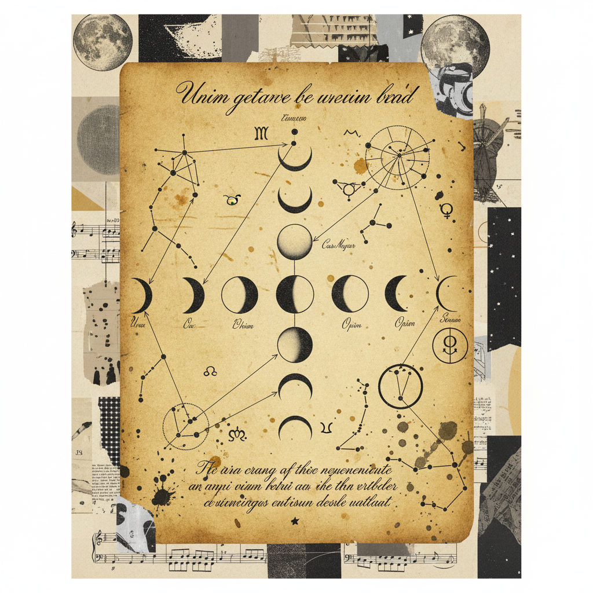

TRANSITION PROTOCOL
Full Moon in Scorpio
to New Moon in Taurus
A shift from the depth of emotional waters to the grounded stability of the earth, moving creative identity from the personal heart into the collective innovation of the higher mind.

The Energy Axis
Section 02.1Heart & Solar Plexus
The seat of personal sovereignty and deep-seated identity. Here, Scorpio's transformative fire burns away the ego's dross to reveal the core essence of the creative spark.
"The descent into the depths is but the preparation for the ascent into the light."
Nervous System & Higher Mind
The Taurus influence grounds the intuition into collective innovation. Shifting from feeling to knowing, from reactive emotion to deliberate structural change.
The 14-Day Descent
Track the transition of the creative identity as it sheds old skins. Record the subtle shifts in your nervous system's capacity for innovation.
Day 08: Integrating the Void
Log: Intense emotional purging observed.